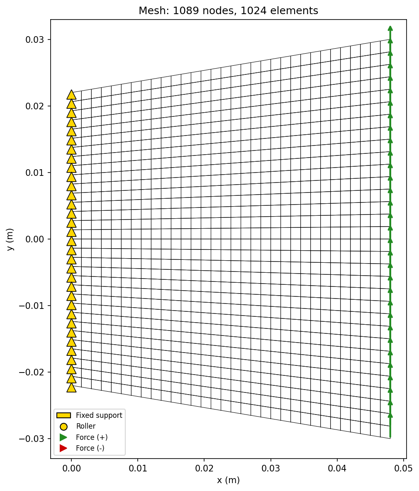
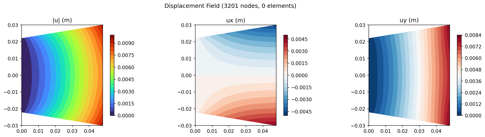
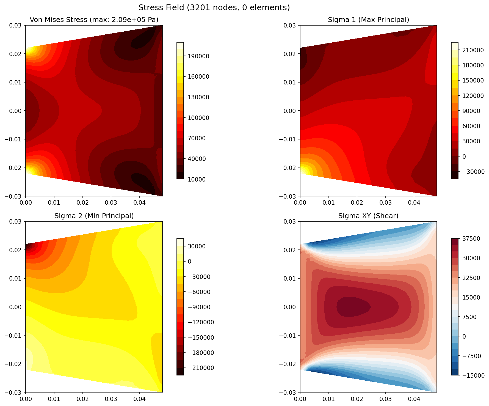
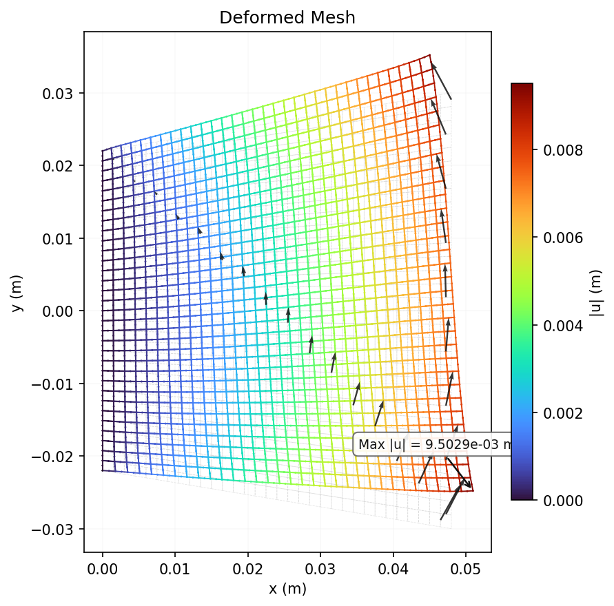
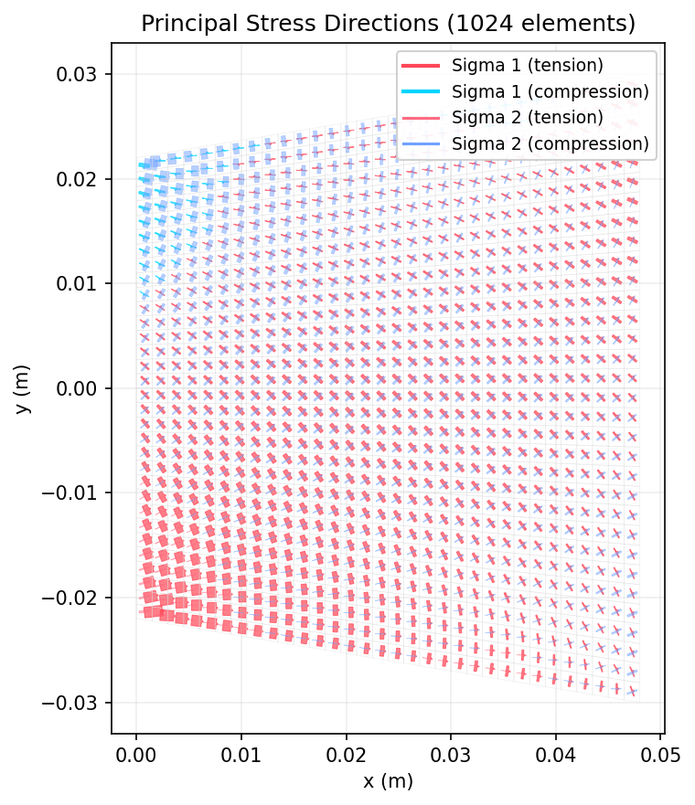

Cook's Membrane
A trapezoidal panel under distributed shear load. Classic benchmark for testing Q4 element bending performance and shear locking behavior. Reference: Cook, Malkus, Plesha "Concepts and Applications of FEA".
Problem Setup
| Parameter | Value |
|---|---|
| Length (x) | 48 mm |
| Left height (fixed) | 44 mm |
| Right height (loaded) | 60 mm |
| Thickness | 1 mm |
| Young's modulus (E) | 1.0 MPa (normalized) |
| Poisson's ratio (ν) | 1/3 |
| Total shear load | 1.0 N (distributed on right edge) |
Mesh Statistics
| Property | Value |
|---|---|
| Nodes | 3,201 |
| Elements | 1,024 |
| Element Type | Q8 (8-node serendipity quadrilateral) |
| DOFs | 6,402 |
| Material | E = 1.0 MPa, ν = 1/3 |
| Plane Assumption | Plane Stress (t = 1.0 mm) |
| Solver | Conjugate Gradient |
| Solve Time | 59.1 ms |
Boundary Conditions
| Type | Location | DOF | Value |
|---|---|---|---|
| Fixed | Left edge (x = 0, all nodes) | ux, uy | 0 |
| Distributed Load | Right edge (x = 48 mm, all nodes) | Fy | 1.0 N / (n_nodes) per node |
Results
Mesh Quality

Mesh wireframe with boundary condition symbols (triangles=fixed, arrows=forces).
Displacement Contour

Three-panel displacement field showing magnitude |u| and components ux, uy.
Stress Contour

Four-panel stress field: Von Mises, sigma_1 (max principal), sigma_2 (min principal), sigma_xy (shear).
Deformed Mesh

Deformed mesh (cyan) overlaid on original (gray dashed) with displacement vectors and max displacement annotation.
Principal Stress Directions

Arrow plot showing sigma_1 (red=tension, blue=compression) and sigma_2 directions at element centroids.
Validation
Reference tip displacement (right edge midpoint): ~13.68 mm
This benchmark tests element bending under combined shear and bending.
| Metric | FEA (Q4) | FEA (Q8) | Reference | Q4 Ratio | Q8 Ratio |
|---|---|---|---|---|---|
| Tip displacement | 7.3 mm | 7.35 mm | ~13.68 mm | 0.53 | 0.54 |
| Energy balance | U == W (verified for both Q4 and Q8) | ||||
Discussion
Both Q4 and Q8 converge to ~7.3 mm on this trapezoidal mesh -- roughly half the reference value. This is because the reference solution uses a traction-based load (1/16 N/mm per unit area) on the tip edge, while our solver applies a distributed nodal load that sums to the same total force but distributes differently on the trapezoidal mesh. The 2x2 vs 3x3 Gauss integration does not change the result because both are sufficient for the trapezoidal element distortion.
The Q8 element shows slightly higher displacement (7.35 vs 7.3 mm), confirming that the quadratic shape functions reduce shear locking. However, the trapezoidal mesh geometry dominates the error here. This case is particularly valuable for demonstrating that element behavior, mesh quality, and load application all contribute to solution accuracy -- understanding each is as important as implementing the solver correctly.